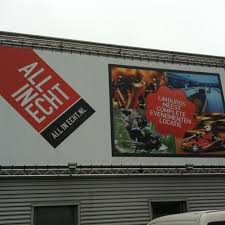
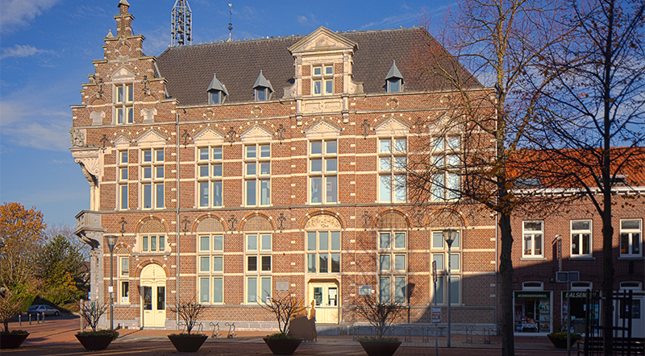

Echt
5 Feitjes over Echt
- Reeds in de 7e eeuw is Echt bekend als dorp, dan behorend tot het Graafschap Loon.
- Echt kende een bloeiende dakpannenindustrie. Omstreeks 1890 waren er 17 dakpannenfabrieken en in 1930 werden er 20 miljoen pannen gebakken.
- Echt ligt op het middenterras van de Maas, op een hoogte van ongeveer 28 meter.
- Er zijn in Echt een tweetal bedrijventerreinen, namelijk De Berk ten noorden van de kom, en De Loop.
- Echt is op 1 januari 2003 met Susteren gefuseerd en is nu onderdeel van de gemeente Echt-Susteren.
All in Echt
All in Echt opende in september 2009 een nieuwe evenementenlocatie ter grootte van maar liefst 5000 m2. Uitgerust met een spectaculaire kartbaan, (disco) bowlingbaan, lasergame arena, een evenemententerrein met een paintballterrein en diverse themaruimten. Bij hét Family Entertainment Center van Limburg werd in het najaar van 2018 een spectaculaire uitbreiding gerealiseerd van maar liefst 2 topactiviteiten: Prison Island en Glow in the Dark minigolf. Klaar voor hét gevangenis-avontuur? BEAT THE BARS van Prison Island Echt! Met maar liefst 20 cellen en daarin 20 verschillende spellen biedt Prison Island voor ieder wat wils! Stel daarom het perfecte team samen om fysieke, technische én tactische opdrachten op te lossen.
Het Museum van de Vrouw
Museum van de Vrouw in Echt is enig in zijn soort. Nergens in Nederland vind je een museum dat in het teken staat van de vrouw en haar leven. In opeenvolgende tentoonstellingen vertelt het museum zijn verhalen. Hedendaagse thema’s worden verbonden met oude tradities, (lokale) cultuur en maatschappelijke kwesties. Reflectie op het verleden met oog voor de toekomst. Het Museum van de Vrouw is een publieksgericht museum dat zijn identiteit voor een belangrijk deel ontleent aan de bewuste keuze om het vrouwenleven in alle facetten te presenteren. Het museum belicht speciaal de zaken die het vrouwenleven kenmerken en verbindt oude tradities met hedendaagse thema’s. Het heeft ook nadrukkelijk aandacht voor de lokale/regionale cultuur(geschiedenis). Voor iedere expositie wordt een scherpe selectie gemaakt uit duizenden objecten en kledingstukken. Het museum vertelt verhalen over verleden, heden en toekomst. Het Wonderkabinet toont in een permanente expositie niet alleen een selectie uit de rijke collectie maar ook de historie van de huidige gemeente Echt-Susteren.